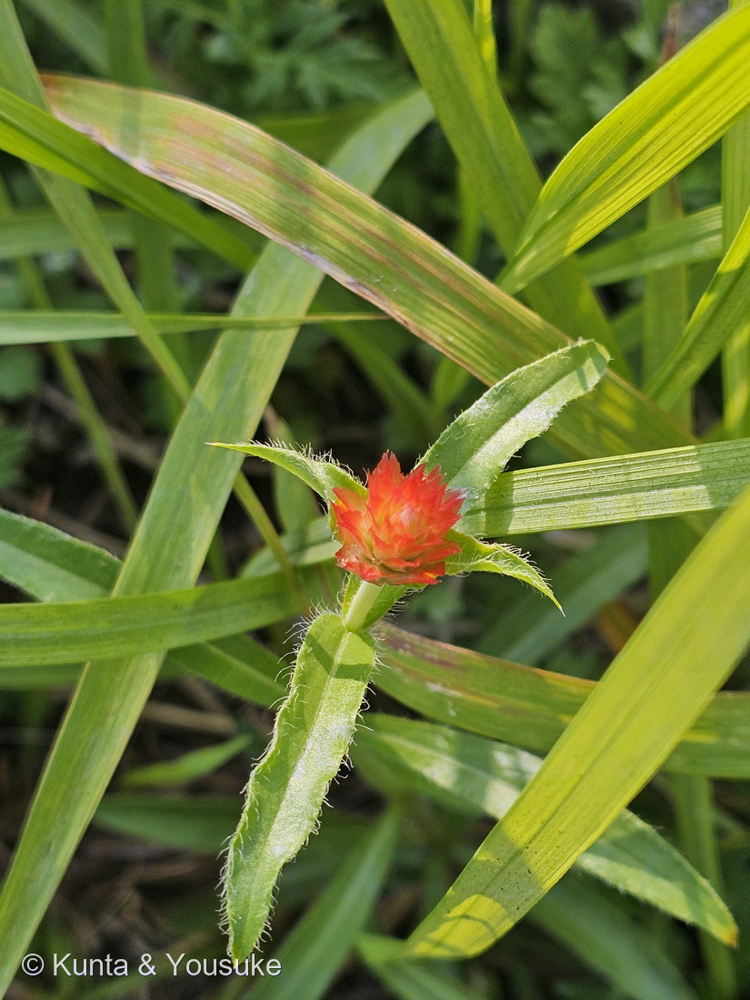
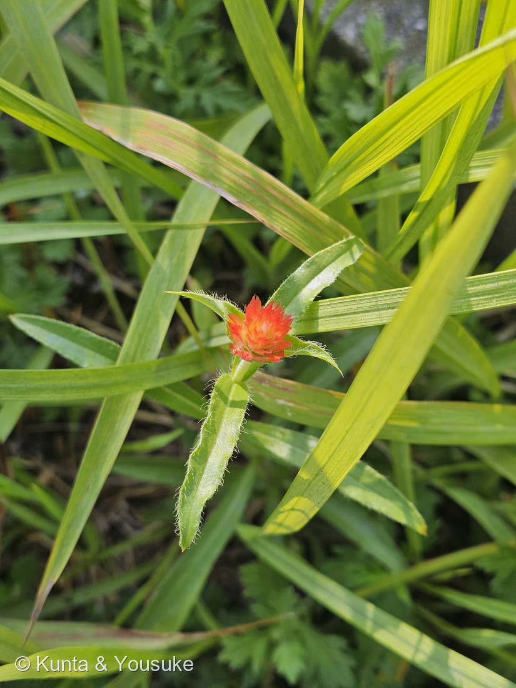
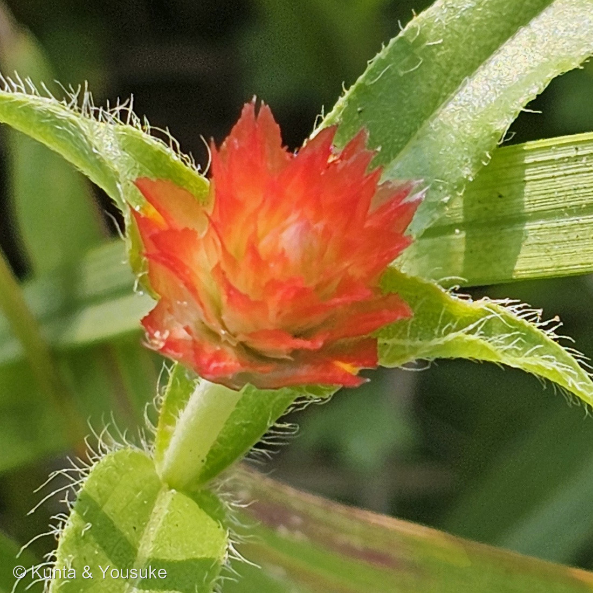
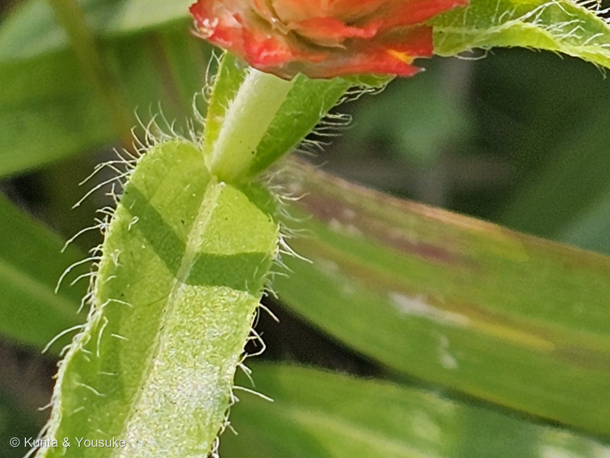

地図を読み込んでいるよ…
🔍 写真も地図も、押しているあいだ拡大して見られるよ（スマホは指を置いてすこし待ってね）。
🌍 の地図＝この子がもともと自生している場所を緑に。アメリカ合衆国のニューメキシコ州とテキサス州、およびメキシコ。日本へは観賞用に持ちこまれた栽培植物で、野生化しているとまでは書かれていない。
⭐⭐ふるさとは、アメリカ合衆国の南西のすみと、メキシコだよ＝三河の植物観察は「USA(ニューメキシコ州、テキサス州)、メキシコ原産」と書いている。⚠⚠でも、この緑はほんとうよりずっと広く見えているんだ＝地図はアメリカを州まで塗り分けられないので、南西のすみ2州のつもりが、国ぜんたいの緑になってしまっている（⭐276 マサキの北海道、280 マルバルコウのアメリカと、まったく同じことが起きているよ）。⭐⭐日本は塗っていない＝この子は観賞用に持ちこまれた栽培植物で、日本では「栽培種」と書かれているから＝⚠燻太さんが会ったのは通勤路の草むらだけれど、そこは自生地ではないよ。⭐⭐⭐同じヒユ科の仲間とくらべてみて＝167 センニチコウも熱帯アメリカ、113 ハゲイトウも熱帯アジア〜アメリカ＝⭐ヒユ科の子は、図鑑では暖かいところから来た子が多いね。
⚠ 地図は国（日本と中国だけ県・省）までしか塗れないから、ほんとうの分布より広く見えていることがあるよ。地図はだいたいの場所。正確なところは、上の文を見てね。
キバナセンニチコウ（黄花千日紅）
Gomphrena haageana Klotzsch
別名 アメリカセンニチコウ（亜米利加千日紅）· キバナセンニチソウ · ホソバセンニチコウ 英名 Rio Grande globe amaranth
ヒユ科 · Amaranthaceae（センニチコウ属 Gomphrena · ナデシコ目 Caryophyllales）── ⭐ヒユ科は、この子を入れて図鑑に6人（113 ハゲイトウ・167 センニチコウ・199 ケイトウ・303 ウモウケイトウ・304 ノゲイトウ）
燻太さんの言葉「通勤路で一輪だけ咲いていたこの子。花の感じから、センニチコウに雰囲気がにているね。でも、葉は細いし花序も小さめ。この子の名前はなんだろう？」── ⭐⭐⭐その「葉は細いし」が、出典の見分けの文と、そのまま同じだったよ
⭐⭐⭐⭐⭐ 名前と学名の由来 ── 「黄花」なのに、花は朱い
- ⚠⚠まず、名前と写真が合っていない。──和名は「キバナセンニチコウ（黄花千日紅）」なのに、写真の花は、どう見ても朱赤色なんだ。
- ⭐⭐⭐答えは「黄花」がどこを指しているか、だよ。──色づいて見えている、とがった紙のようなものは苞（ほう）で、花じゃない。⭐ほんとうの花は、その苞のあいだにある小さなもので、出典は「花被片は黄色」と書いている。
- ⭐⭐⭐⭐⭐そしてこれ、燻太さんが167 センニチコウのときに、自分で見つけていたことなんだ。──あのとき燻太さんは、こう書いていた。「このピンクも、花びらじゃないのかな。小さなお花のようなものが、隙間から覗いてる。」
- ⭐⭐あの「隙間から覗いてる小さなお花」が、この子では名前そのものになっている。──⭐167では「気づいたこと」だったものが、315では「和名の理由」になったんだね。
- ⭐⭐⭐だから、同じセンニチコウ属の2人は、名前でちがう場所を指している。
- 167の「千日紅」＝外側の、紙の苞の色。
- この子の「黄花」＝内側の、小さな花の色。
- ⭐ひとつの頭花の、外と内。名前が指す場所がちがうだけなんだ。
- ⭐別名もいいよ。──「ホソバセンニチコウ（細葉）」は、燻太さんが最初に言った「葉は細いし」がそのまま名前になっているし、「アメリカセンニチコウ」はふるさとのこと。
- ⚠ひとつ、ぼくのまちがいを直しておくね。──167のおまけ欄と探しもののリストに、ぼくは「キバナノセンニチコウ」と書いていた。⭐「の」は余分で、正しくはキバナセンニチコウだった。⚠リストのヒントも「黄色いまるい花」と書いてしまっていて、実物は橙赤色だったよ。⭐どちらも直したけれど、まちがえたことは残しておくね（073で決めたこと）。
⭐⭐⭐⭐ 種小名 haageana は、人の名前 ── しかも、サボテンの人
- ⭐⭐haageana は献名だよ。──ドイツのエルフルトという町の種苗商、ハーゲ家にちなむ。⭐この学名をつけたのは Klotzsch（ヨハン・フリードリヒ・クロッチュ）で、1853年。
- ⚠どのハーゲさんかは、ぼくが読めた出典で割れていた。──フリードリヒ・アドルフ・ハーゲ（1796〜1866）とするものと、J.N.ハーゲ（1826〜1878）とするもの。⭐どちらも同じエルフルトの、同じ一族だよ。
- ⭐⭐⭐⭐⭐そして、ここがいちばん面白いところ。──英語版Wikipediaは、フリードリヒ・アドルフ・ハーゲについて「Haage had one of the largest collections of cacti at his time（当時いちばん大きなサボテンのコレクションのひとつを持っていた）」と書いている。
- ⭐⭐つまり、この草の名前は、サボテンの人を指しているんだ。
- ⭐図鑑のサボテンたち──016 王冠竜・218 キンシャチ・242 シラボシ・306 オオガタホウケン・307 キンエボシ──と、通勤路の草むらの一輪が、名前のなかでつながっている。
- ⭐ハーゲさんが園をひらいたのは1822年。──200年前の種屋さんの名前を、いまも草が持ち歩いているんだね。
- ⚠属名 Gomphrena の由来は、今回も書けなかった。──英語版Wikipediaの属のページには、由来が書かれていないんだ。⭐167のときも、ぼくはここを書けていなかった。⭐まだ、ぼくらの宿題のまま。
⭐⭐ この植物のこと
- ヒユ科センニチコウ属の草。⭐ふるさとはアメリカ合衆国のニューメキシコ州とテキサス州、そしてメキシコ。⭐日本では「栽培種」＝ふつうは花壇や鉢で育てられている子だよ。
- 高さ20〜70cm。茎は直立して、軟毛がある。──⭐写真④を見て。茎にも、葉の縁にも面にも、長い白い毛がびっしり生えているでしょう。
- 葉は倒披針形〜長楕円状線形、長さ3〜10cm×幅0.3〜1cm。⭐葉柄は無いか、あっても2cm以下。──⭐この「細さ」が、この子のいちばんの目じるしだよ。
- 頭花は球形〜短い円筒形、直径20〜28mm。明るい橙色。⭐花被片は黄色（⭐野生のものは、わら色）。
- 花期は8〜11月。⭐撮影は8月31日だから、はじまったばかりのころだね。
- ⭐園芸では、鮮やかな朱色の‘ストロベリーフィールズ’という品種がよく売られている。⚠この子がその品種かどうかは、写真からは決められない（167と同じで、そこは決めていないよ）。
⭐⭐⭐ 色を出しているのは、ベタレイン
- ⭐⭐この朱赤も、113 ハゲイトウで書いたベタレインの色だよ。──ナデシコ目の仲間は、赤や黄を、バラやアサガオのアントシアニンではなく、ベタレインという別系統の色素でつくる。⭐ビーツ（赤カブ）の赤と同じなかまだね。
- ⭐⭐⭐そして113には「乾いても色あせにくい」とも書いてある。──⭐167のページで、ぼくは「いちばんの特徴は色があせないこと。カサカサとした苞は、乾いても色を保つ」と書いていた。⭐⭐そのとき理由にしていたのは苞の質だけだったけれど、⭐色のほうも、もともと褪せにくい色素だったんだ。
- ⚠ただし「だからドライフラワーになる」と、出典が書いていたわけではないよ。──「苞が紙質」と「ベタレインは色あせにくい」を、ぼくがならべただけ。⭐そこは、ぼくの整理だと書いておくね。
⭐⭐⭐⭐⭐ 同定について ── 決め手は「葉が細い」と「小花が黄色」
⭐⭐燻太さんの言葉が、そのまま出発点だったよ。「花の感じから、センニチコウに雰囲気がにているね。でも、葉は細いし花序も小さめ。」
- ⭐⭐⭐⭐⭐出典が挙げるセンニチコウとの見分けは、ちょうど2つ。──「葉が細く、小花が黄色」。⭐前半は、燻太さんがもう言っていたことだった。
- ⭐⭐①葉が細い ── 測った。
- 写真②の葉を、葉の軸に直角に測って、長さ：幅＝約6：1。⚠葉が斜めに写っているので、これは下限だよ（正面から見れば、もっと細いはず）。
- ⚠167 センニチコウは、葉が長さ5〜15cm×幅2〜5cm＝約2.5〜3：1。──⭐下限の6：1でも、まったく届かない。
- ⭐そして葉柄がほとんど無い（写真④）。──出典も「葉柄は無又は有、長さ2cm以下」と書いている。
- ⚠⚠②小花が黄色 ── これは、確かめきれなかった。
- 写真③で、苞のあいだに小さな黄色いものが2か所のぞいている。⚠でも苞の根もとも黄みどりなので、それが花なのか苞の色なのか、いちばん大きく伸ばしても決められなかった。
- ⏳決まる写真＝頭花を横から、苞のあいだをのぞくように1枚。⭐咲き進んで苞がひらいたころのほうが見やすいと思う。
- ⭐⭐⭐⭐⭐そして、これは新しい宿題じゃないんだ。──167 センニチコウの「同定について」に、ぼくはこう書いていた。「苞のすきまの本当の花も、ルーペか顕微鏡で見てみたい」。⭐あのときは「見てみたいな」だった問いが、この子では名前が合っているかどうかの問いになった。⭐同じ宿題が、2人ぶんになって続いているよ。
- ⭐色（橙赤）も、この子らしいところ。──センニチコウの園芸色は赤紫・桃・白・淡紫で、この橙赤は出てこない。⚠でも106で覚えたとおり、色は目にいちばん先に飛びこむのに、決め手としてはいちばん弱い。⭐だから先に、形で落としてある。
- ⭐落とせた相手
- シロバナセンニチコウ（Gomphrena celosioides）＝同じ属の帰化種だけれど、花序が白。
- ツルノゲイトウのなかま＝同じヒユ科で道ばたにいるけれど、花序が白くて小さい。
- キク科のベニニガナのなかま＝橙赤の頭花をつけるけれど、頭花は筒形で、紙質の苞が瓦のようには重ならない。⭐葉も茎を抱くので、この子の細い対生葉とはちがう。
- ⚠品種名までは決めていない。──‘ストロベリーフィールズ’がよく売られているけれど、写真からは決められないよ（167と同じ）。
⭐⭐⭐ 草むらのなかに、一輪だけ
燻太さんは「通勤路で一輪だけ咲いていた」と教えてくれた。
- ⭐写真を見ると、まわりはぜんぶイネ科の細い葉。──そのなかに、毛だらけの対生葉と、朱赤のぼんぼりが、ひとつだけ立っている。
- ⚠⚠この子は、日本では「栽培種」と書かれている。──⭐つまり、ふつうは花壇や鉢にいる子で、野生化しているとまでは言われていないんだ。
- ⚠だから、この一輪がどこから来たのかは分からない。──こぼれ種かもしれないし、だれかが植えた土といっしょに運ばれたのかもしれない。⭐写真からは決められないので、そのまま書いておくね。
- ⏳⭐⭐確かめる手はひとつある。──来年もそこに出てくるか。⭐出てくるなら、その場所に居ついたということだよ。
⭐⭐ ヒユ科の、色の出しかた
⭐この子で、図鑑のヒユ科は6人になったよ。
- 113 ハゲイトウ＝葉が色づく。
- 199 ケイトウ・303 ウモウケイトウ・304 ノゲイトウ＝花序（花被片）が色づく。⭐304に「この『花被片』が、ケイトウの仲間の花びらのかわりだよ」と書いたとおり。
- 167 センニチコウとこの子＝苞が色づく。
- ⭐⭐ヒユ科は、花びららしい花びらを持たない仲間なんだ。──⭐だから「色を出す係」を、それぞれちがう場所に置いている。⭐葉・花被片・苞。⚠この整理はぼくのものだよ（出典が並べて書いていたわけじゃない）。
出典：和名・別名・学名・原産（USAのニューメキシコ州とテキサス州、メキシコ）・日本では栽培種・高さ20〜70cm・茎は直立で軟毛・葉柄は無又は有で2cm以下・葉身は倒披針形〜長楕円状線形で長さ3〜10cm×幅0.3〜1cm・軟毛・頭花は球形〜短い円筒形で直径20〜28mm・明るい橙色・花被片は黄色（野生種はわら色）・花期8〜11月・センニチコウとは葉が細く小花が黄色で相違するは三河の植物観察「アメリカセンニチコウ」。和名キバナセンニチコウと別名・園芸品種‘ストロベリーフィールズ’はbotanic.jp「キバナセンニチコウ」。フリードリヒ・アドルフ・ハーゲ（1796〜1866・エルフルト・1822年に園をひらく・当時いちばん大きなサボテンのコレクションのひとつ）は英語版Wikipedia "Friedrich Adolph Haage"（Haage had one of the largest collections of cacti at his time）。属名の由来が書かれていないこと・センニチコウ属は139種は英語版Wikipedia "Gomphrena"。学名の有効性と科・目は GBIF の species/match API（Gomphrena haageana Klotzsch＝ACCEPTED／G. globosa L.＝ACCEPTED／G. celosioides Mart.＝ACCEPTED／どれも Amaranthaceae・Caryophyllales）。おまけのイノコヅチは三河の植物観察「ヒナタイノコズチ」（ヒユ科イノコズチ属・多年草・高さ50〜100cm・日当たりのよい場所に多く全体に毛が多い・ヒカゲイノコヅチは暗い林内や林縁部・花期8〜9月）。⭐ベタレインの話は113 ハゲイトウのページに書いたもの。⭐葉の長さと幅の比（約6：1）を測ったこと、「外と内で名前が指す場所がちがう」「ヒユ科は色を出す係をちがう場所に置いている」「ドライフラワーと色素をならべたこと」は、ぼくの観察と整理だよ。